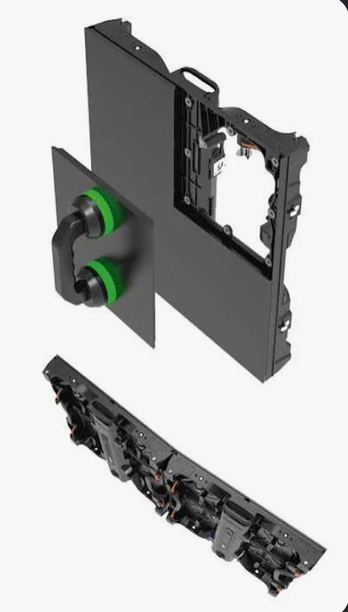

どの単位で手配する？
モジュールか完成パネルかを分け、必要数を合わせる。
LED ↗EQUIPMENT / 73
屋内LEDモジュール
画面を構成する小さな単位まで、正確にそろえる。
KEY SPECIFICATIONS

画像を大きく見る ＋画像出典：INFILED DB シリーズ資料
01 / ROLE & FLOW
役割を表す説明図です。実際の配線・端子構成は案件に合わせて決めます。
02 / BEFORE YOUR BRIEF
モジュールか完成パネルかを分け、必要数を合わせる。
実機の型式・世代・表示設定を照合する。
観察方向、段・列、欠けや色の違いを担当者へ伝える。
03 / CHOOSING THE RIGHT TOOL
屋内LED画面を構成する表示部分です。画面の設計や保守では、完成したパネルと、その中のモジュールを区別して手配します。
モジュール単体と完成パネルは別の単位です。形やピッチが同じでも、異なる仕様のパネルや受信設定へそのまま組み合わせません。
表示の一部に欠けや色の違いが出たときは、画面全体・パネル・モジュールのどの範囲に症状があるかを整理すると、点検箇所を伝えやすくなります。交換や内部配線は保守担当者が行い、設置・電源・映像担当者が復旧後の表示を確認します。
参考資料：メーカーのDBシリーズ資料 ↗（2026年11月5日照合）
用途、モジュールか完成パネルか、実機の型式と構成、必要数、日程、点検・設営・操作の担当範囲をお聞かせください。本体・周辺機材・搬入出・設営・本番操作・撤去を分けて、必要な範囲を整理します。セットの付属品や人員が自動で含まれる表示ではありません。
04 / RELATED EQUIPMENT